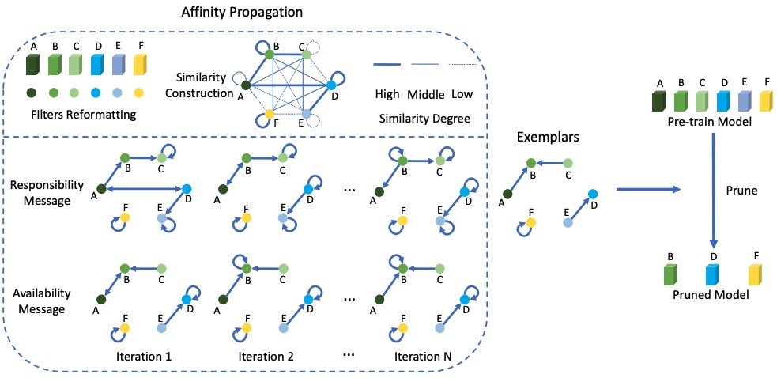
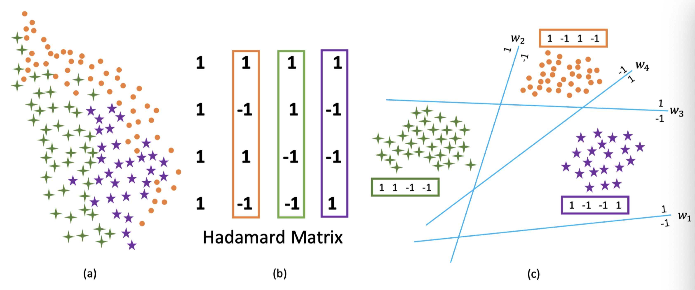
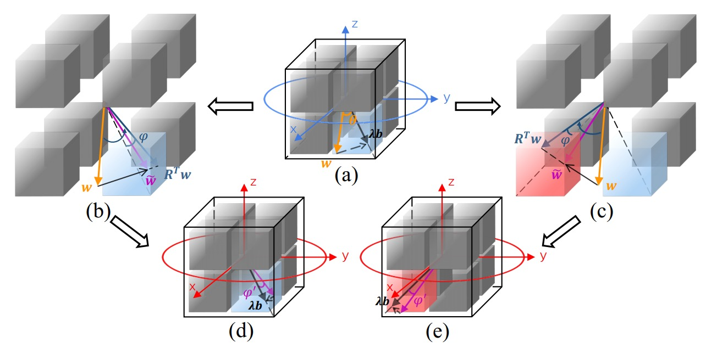
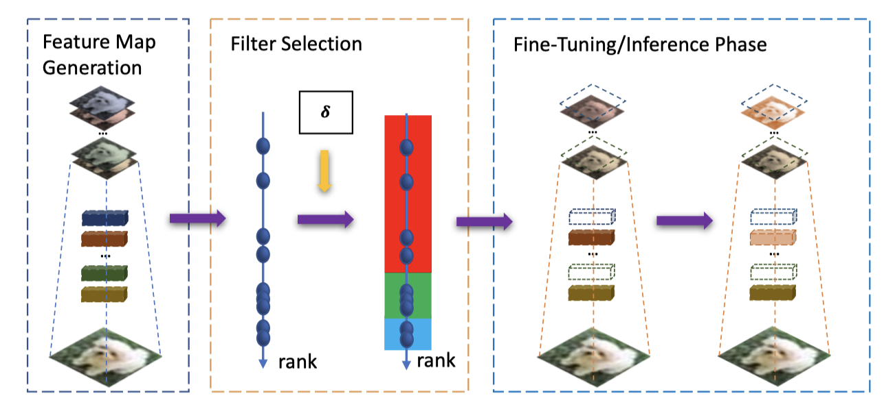

Mingbao Lin (林明宝)
Best way to reach me →
Email: lmbxmu@stu.xmu.edu.cn
I am currently a final-year Ph.D student in the Lab of MAC, Artificial Intelligence Department, School
of Informatics, Xiamen University, China. Also, I will be a researcher at Tencent Youtu Lab.
My supervisor is Prof. Rongrong Ji. More recently, I focus on:
- Network compression and acceleration
- Multimedia retrieval using hashing technique
Publications
Journal

- 
- 

- 
- 
Conference
Yunshan Zhong, Mingbao Lin, Gongrui Nan, Jianzhuang Liu, Baochang Zhang, Yonghong Tian, Rongrong Ji✉
IntraQ: Learning Synthetic Images with Intra-Class Heterogeneity for Zero-Shot Network Quantization. [pdf coming] [arXiv] [code]
IEEE/CVF Conference on Computer Vision and Pattern Recognition (CVPR). 2022
IntraQ: Learning Synthetic Images with Intra-Class Heterogeneity for Zero-Shot Network Quantization. [pdf coming] [arXiv] [code]
IEEE/CVF Conference on Computer Vision and Pattern Recognition (CVPR). 2022
Preprint


Working Experience
- 2019.09 - Now, Research Intern, Peng Cheng Lab, Shen Zhen.
Activities
- Conference Reviewer: CVPR, ICCV, ECCV, ICML, NeurIPS, AAAI, ACM MM, IJCNN
- Journal Reviewer: IEEE TPAMI, JMLR, IEEE TIP, IEEE TNNLS, IEEE TMM, IEEE TCSVT, NEUCOM, NEUNET, NCAA
Awards
- National Scholarship, 2021
- National Scholarship, 2020
- Xiamen University Scholarship, 2019